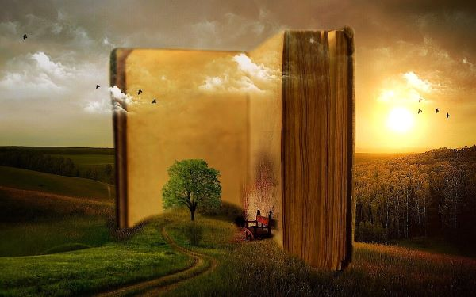

O que é literatura?

Chamarei de literatura, da maneira mais ampla possível, todas as criações de toque poético, ficcional ou dramático em todos níveis de uma sociedade, em todos os tipos de cultura, desde que chamamos folclore, lenda, chiste, até as formas mais complexas e difíceis da produção escrita das grandes civilizações.
Vista deste modo, a literatura aparece claramente como manifestação universal de todos os homens em todos os tempos.Não há povo e não há homem que possam viver sem ela, isto é, sem a possibilidade de entrar em contato com alguma espéciede fabulação. Assim como todos sonham todas as noites, ninguém é capaz de passar as vinte e quatro horas do dia sem alguns momentos de entrega ao universo fabulado. O sonho assegura durante o sono a presença indispensável desse universo, independentemente da nossa vontade. E, durante a vigília, a criação ficcional ou poética, que é a mola da literatura em todos os seus níveis e modalidades, está presente em cada um de nós, analfabeto ou erudito — como anedota, causo, história em quadrinho, noticiário policial, canção popular, moda de viola, samba carnavalesco. Ela se manifesta desde o devaneio amoroso ou econômico no ônibus até a atenção fixada na novela de televisão ou na leitura seguida de um romance.
Ora, se ninguém pode passar vinte e quatro horas sem mergulhar no universo da ficção e da poesia, a literatura concebida no sentido amplo a que me referi parece corresponder a uma necessidade universal que precisa ser satisfeita e cuja satisfaçãoconstitui um direito.